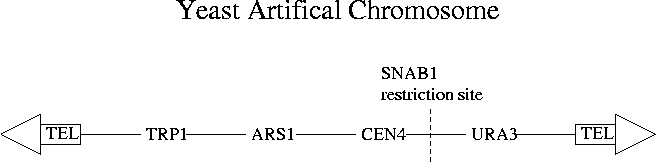
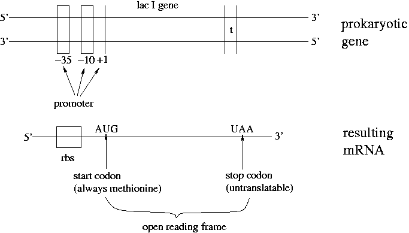
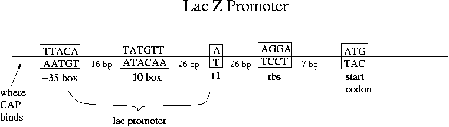

Day 10 Morning Lecture Notes
Steve Williams, Smith College
June 15, 2004
A "polylinker" is the same thing as a "multiple cloning site" (MCS) region. These terms refer to the part of a plasmid with many restriction sites. Restriction sites outside of lac Z occur naturally but are generally not used.
A few viruses and protozoans have all their genes on a single dedicated template strand of DNA. Most organisms have some genes on one strand and some on the other.
Directionality of cloning matters only for cDNAs, not genomic DNA. Genomic fragments may not even include genes, after all. Directionality makes no difference in libraries used for sequencing since the computer programs that do reassembly can easily reverse fragments. Genomic libraries are not usually used for expression since plasmids don't usually contain eukaryotic promoters so that E. coli can't transcribe them anyway.
To cut with two restriction enzymes sequentially, cut with one, and then supplement the buffer to the conditions of the second enzyme.
Phenol dissolves proteins but not negatively charged DNA, which is more hydrophilic. Chisam helps wash phenol off DNA.
Types of vectors: plasmids, cosmids, BACs and YACs. Plasmids are usually used for subcloning. Making a library directly in a plasmid would be too difficult due to 1000x loss; the 7x coverage would be very difficult to achieve. Instead, make the library in lambda, screen for and extract the gene of interest, and then subclone into the plasmid. Plasmids of 3-4 kbp can take very large inserts of 70-80 kbp. However large plasmids are harder to get into E. coli.
A cosmid allows cloning of 30-40 kbp fragments. How to get these cosmids into E. coli? How can lambda help with the transformation? Ligate the insert into a linearized plasmid (called a concatomer) that has antibiotic resistance, cos sites and lac Z. (Recall that the cos region of lambda is the site that can be cut to give 12 bp overhangs.) Add packaging extract which will cut at the cos sites and insert the DNA into lambda. In this case the plasmid DNA can be small and the insert can be large. The Phage delivers the plasmid to E. coli which replicates it. We get white colonies of E. coli with no phage DNA except as ends. Note that the packaging extract is proteins, not DNA. Concatomers are long chains which form in high concentration solutions as opposed to circles which form in low concentration solutions.
BAC vectors = bacterial artificial chromosomes. They are like a second small bacterial chromosome in that they're big and one copy per cell is produced. Why is one copy per cell useful? Because 2 large fragments in a cell would inevitably recombine. One copy per cell is a slow form of reproduction but cells are cheap and growing a liter of them is easy. BAC libraries are used in big genomic sequencing projects. They also use cDNA libraries and smaller-insert libraries.
YAC = yeast artificial chromosomes. Their utility is limited by rapid recombination. The inserts can be up to 3x105 bases. A yeast is a single-celled eukaryote.
Eukaryotic chromosomes need centromeres, telomeres and a replication origin. A method for seeking transformants is also important. YACs are mostly based on Saccharomyces cerevisiae, better known as brewer's yeast. A YAC has an E. coli origin of replication and antibiotic resistance. After cutting the YAC with a BAMH1 restriction enzyme, expose it to telomeres surrounding a centromere (CEN4). The yeast origin of replication is called ARS (autonomous replication sequence).

TRP1 and URA3 genes make tryptophan and uracil. YACs are inserted into yeast via electroporation. Choose a yeast that can't make tryptophan and uracil and plate onto a medium that doesn't contain these necessary nutrients. This is another form of transformant selection.
BAC vectors have much more stable inserts than YACs. YACs were used early in the Human Genome Project but now have largely been supplanted by BACs.

RNA polymerase recognizes the -35 and -10 boxes. -10 is where the unwinding of the strands begins. +1 is where transcription starts as opposed to the "start codon" where translation of mRNA begins. Sometimes the initial methionine of a protein may be cleaved off. Multiple ribosomes may translate an mRNA at once.
The open reading frame is a region that has no stop codons and can be translated into a protein. Note that all ORFs are not genes but all genes are ORFs. An ORF is a candidate to be a real gene.

Promoters vary in E. coli; that's why some genes are expressed more than others. The lac promoter doesn't bind polymerase very efficiently. Transcription proceeds from the promoter to terminator while translation proceeds from the ribosome binding site (rbs) to the stop codon. Note that the length of gene >= the length of the mRNA >= the length of a protein. The non-coding parts of the mRNA affect its folding and thus its degree of expression. Transcription is performed by RNA polymerase which must bind at a promoter. DNA polymerase can bind at any 3' chain end and does not require a promoter.
There are 3 stop codons that prokaryotes and eukaryotes have in common. Mitochondria have one additional stop codon.
Up Previous Next